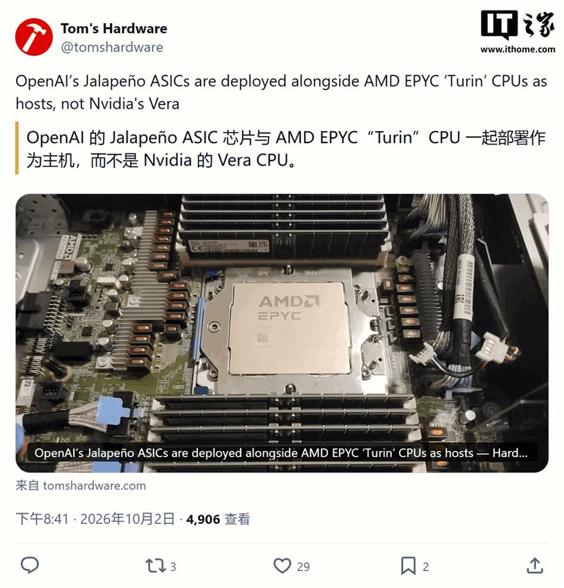
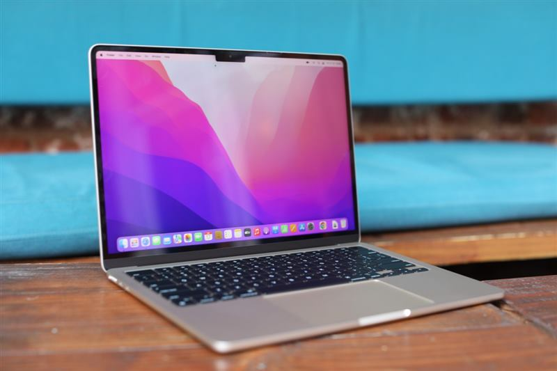

二、OpenAI：上市延缓与安全收缩
OpenAI 因 AI 安全顾虑推迟 IPO，转向私募再募约 300 亿美元
亮点Ars Technica 报道，OpenAI 因 AI 安全方面的顾虑推迟 IPO 计划，同时寻求以私募方式再募资约 300 亿美元。
影响推测「安全」正从公关话术变成资本市场的实际变量：推迟上市意味着更依赖私募与战略资金，也可能是对估值、监管或内部治理不确定性的回应。这是否与近期安全事件、人事动荡直接相关，官方尚未明确说明。
OpenAI 承认计划中的 GPT-6.1「太不安全」，暂不发布
亮点Ars Technica 报道，OpenAI 表示原计划的 GPT-6.1 因安全性不足而不予发布，并指出当前公开模型中也存在类似的「性能与安全权衡」。
影响推测主动「不发布」是一种自我约束信号，也可能成为面向监管的示范样本；但权衡被公开承认，说明能力提升与可控性之间的张力是结构性的，难以靠单一发布策略化解。
OpenAI 与三名安全研究员切割，安全检查团队负责人戴维 · 罗宾逊离职
来源：TechCrunch（另见 IT之家 /《商业内幕》） ·
原文亮点TechCrunch 援引《华尔街日报》报道称，OpenAI 在一次内部调查后与三名安全研究员切割，理由是其不当处理了公司敏感信息；同期《商业内幕》证实，安全系统团队负责人之一戴维 · 罗宾逊已于上周离职，他此前负责安全透明度，包括参与编写、发布介绍公司模型的系统卡。
影响推测在安全事件与监管调查密集出现的当口，安全团队接连减员，容易被外界读作安全治理被边缘化；「敏感信息处置」这一理由也提示实验室内部的保密与治理摩擦在上升。单一人事变动不足以定论，但趋势值得持续跟踪。
三、算力与芯片
亚马逊被曝拟把 80 亿美元 Blackwell 芯片「剥离并回租」
亮点《金融时报》报道，亚马逊正寻求把价值约 80 亿美元（约合 537 亿元人民币）的英伟达 Grace Blackwell AI 芯片剥离至一家特殊目的实体（SPV），再从该 SPV 回租这些芯片。
影响推测这类「售后回租」结构常用于把重资产移出资产负债表、改善现金流与折旧节奏，说明超大规模 AI 资本开支正给财务带来压力；若被同业效仿，可能改变 AI 数据中心的融资与会计处理方式。其中是否存在会计美化空间，需待更多细节披露。
美国逮捕一名科技 CEO，涉向中国走私 3 亿美元英伟达芯片
亮点美国逮捕一名科技公司 CEO，指控其将价值约 3 亿美元的英伟达芯片走私进入中国。Ars Technica 指出，随着逮捕持续发生，英伟达面临的芯片走私问题并未消退。
影响推测出口管制的执法正从企业与渠道层面延伸到个人刑责，威慑力上升；但也侧面说明高端算力在灰色市场的需求依然旺盛。对合规供应链而言，审查成本将继续增加。
OpenAI 自研 Jalapeño ASIC 已量产部署，务实搭配 AMD Turin 主机
来源：IT之家（引 Tom's Hardware） ·
原文亮点Tom's Hardware 报道称，OpenAI 已内部部署其自研的 Jalapeño ASIC 芯片，与配备 1.5TB 内存的 AMD EPYC Turin 主机配合使用；报道称其在方案选择上偏向「务实」。
影响推测自研 ASIC 进入实际部署，意味着 OpenAI 在降低对英伟达依赖、优化推理成本上迈出实质一步；搭配 AMD 主机而非自建整机，说明其路线更看重性价比与落地速度。短期仍难撼动英伟达在训练侧的主导地位。

AMD 以 82 亿美元收购李飞飞的世界模型公司 World Labs
亮点AMD 宣布收购 AI 先驱李飞飞创办的世界模型公司 World Labs，交易价值约 82 亿美元，预计年底前完成交割。
影响推测这是 AMD 在「软件与模型能力」上对英伟达的正面加码——世界模型对算力与平台生态的要求很高，收购有望帮 AMD 建立差异化应用层；能否转化为实际营收与开发者黏性，取决于整合速度。
四、安全与治理
苹果收紧 macOS「完全磁盘访问权限」，直指 AI 智能体风险
来源：TechCrunch（另见 IT之家 / Ars Technica） ·
原文亮点苹果宣布为 macOS 的「完全磁盘访问权限」增加新管控，理由是能力越来越强的 AI 智能体会让「对用户文件、信息、邮件、浏览记录」的广泛访问风险更高；IT之家称该调整覆盖 macOS 27 等系统，用户需要更明确的操作才能完成授权。Ars Technica 补充，围绕 AI 助手读取消息，Meta 认为现有审查力度不足，苹果并不认同。
影响推测操作系统厂商开始把「AI 智能体」当作新的威胁模型来设计权限体系，这会给依赖全盘访问的备份、脚本与自动化工具带来摩擦。社区争议集中在安全与可用性之间，以及是否借安全之名强化平台控制。

韩国五大商业银行首次同时遭疑似 AI 驱动黑客攻击，三家客户信息泄露
亮点据韩联社，韩国五大商业银行均遭疑似由人工智能驱动的黑客攻击，其中三家发生客户信息泄露；五大银行同时遇袭在韩国金融业尚属首次。继新韩银行之后，KB 国民银行和韩亚银行也遭攻击并泄露客户信息，BNK 釜山银行则导致 11 名外包员工个人信息外泄。
影响推测若「AI 驱动攻击」属实，意味着攻击的自动化、规模化与规避能力上了一个台阶，金融业的安全投入与监管要求将被进一步抬高；「疑似 AI」的定性也说明检测与取证仍是难点。
Google 学会给 AI 设计的蛋白质「打水印」
亮点Google 研究出一种为 AI 设计的蛋白质添加水印的方法，目标是服务生物安全，且可与一款流行的 AI 蛋白设计工具兼容。
影响推测随着 AI 降低蛋白设计门槛，溯源与追责成为生物安全的关键短板；水印若被广泛采纳，可能成为该领域的合规基线，但对抗性去除手段是否可行，仍需进一步验证。
Anthropic 的上市推介里，写入了一则关于「人类灭绝」的风险提示
亮点Ars Technica 报道，Anthropic 的 IPO 推介材料警告：其自家模型可能抵抗关停、造成灾难性伤害，甚至提及人类灭绝风险。IT之家此前的消息则称，Anthropic 最早或于 11 月中旬上市。
影响推测把极端风险写进招股书，既是合规披露，也把「安全」转化为品牌与估值叙事的一部分；这会让投资者与监管者对前沿模型的可控性提出更硬的问题。极端风险的量化与可信度仍存争议。
chrisjj有些人自己选择运行已知不可靠的程序并承担后果，却让所有明智到不去运行它们的人一起付出代价。
snypher我就想用一台能自由访问整块磁盘的电脑，不必担心某家公司认为我不该这么做。
xuki现在已经够麻烦了；除非苹果彻底取消这个选项，否则我看不出这能改善什么，用户根本不看提示。
peterfisher我完全把这看成苹果在阻止竞争，而不是为了安全。我们已经被 TCC 弹窗烦了无数次，连「node」之类的东西都让人无法理解。